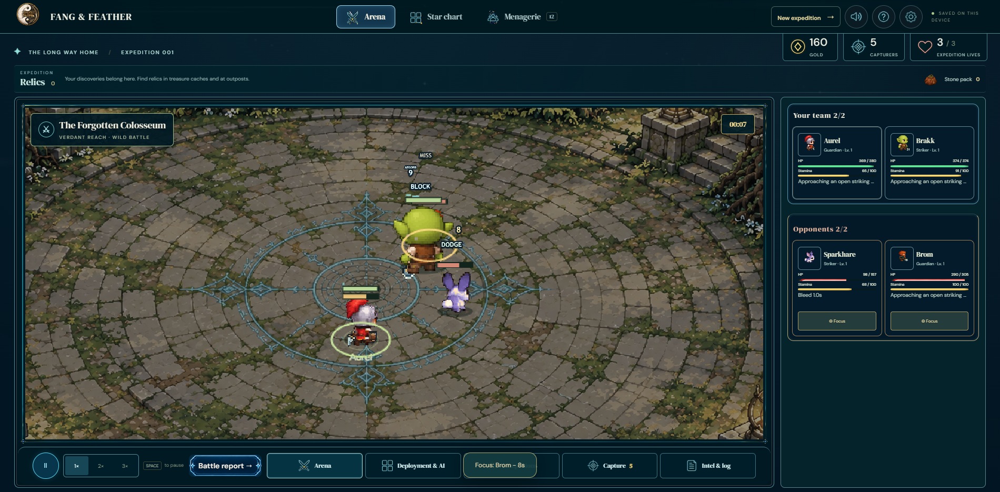
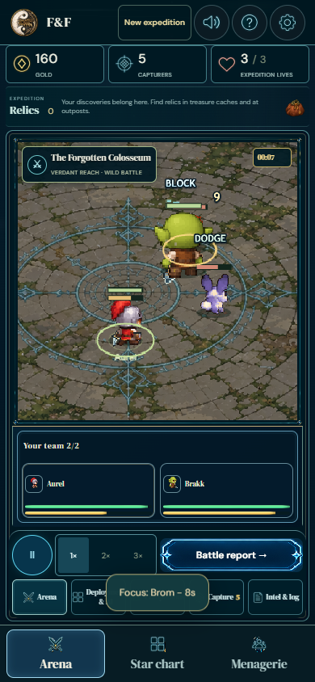

Arm animation reviewPainted arms and held weapons
89 roster entries · 41 families · 3 forms · 8 facings · 17 states · both evolution paths.
Verification and disclosed base test failures · Every-character audit and source hashes · Source/offline combat roster · Decoded indexed-part validation
Normal-speed movies
Every family at native 64px, with an enlarged family selector. Full-cycle arm lengths and cell boundaries are checked for every encoded frame. Each path has 136 decoded state/facing segments.
Wild: native and enlarged player · Warden: native and enlarged player
Original/current and moving-part sheets
Arm sheets show the original, indexed ownership, isolated complete torso, idle and four swing phases at native and enlarged size.
- knight: original/current, all forms and facings — arms form 0 / form 1 / form 2
- orc: original/current, all forms and facings — arms form 0 / form 1 / form 2
- elf: original/current, all forms and facings — arms form 0 / form 1 / form 2
- caster: original/current, all forms and facings — arms form 0 / form 1 / form 2
- fox: original/current, all forms and facings — arms form 0 / form 1 / form 2
- goblin: original/current, all forms and facings — arms form 0 / form 1 / form 2
- fairy: original/current, all forms and facings
- wolf: original/current, all forms and facings
- mech: original/current, all forms and facings
- spider: original/current, all forms and facings
- jelly: original/current, all forms and facings
- serpent: original/current, all forms and facings
- harpy: original/current, all forms and facings
- moth: original/current, all forms and facings
- crab: original/current, all forms and facings
- centipede: original/current, all forms and facings
- dwarf: original/current, all forms and facings — arms form 0 / form 1 / form 2
- minotaur: original/current, all forms and facings — arms form 0 / form 1 / form 2
- skeleton: original/current, all forms and facings — arms form 0 / form 1 / form 2
- lion: original/current, all forms and facings
- bear: original/current, all forms and facings
- stag: original/current, all forms and facings
- drake: original/current, all forms and facings
- beetle: original/current, all forms and facings
- bat: original/current, all forms and facings
- phoenix: original/current, all forms and facings
- rogue: original/current, all forms and facings — arms form 0 / form 1 / form 2
- frostelf: original/current, all forms and facings — arms form 0 / form 1 / form 2
- troll: original/current, all forms and facings — arms form 0 / form 1 / form 2
- feralfox: original/current, all forms and facings
- cat: original/current, all forms and facings
- rabbit: original/current, all forms and facings
- rodent: original/current, all forms and facings
- rhino: original/current, all forms and facings
- turtle: original/current, all forms and facings
- owl: original/current, all forms and facings
- fish: original/current, all forms and facings
- mushroom: original/current, all forms and facings
- mantis: original/current, all forms and facings
- clam: original/current, all forms and facings
- squid: original/current, all forms and facings
Delivered combat at default tuning
Source desktop recording · Offline phone recording · Actual painted-size and input checks


Decoded pixels
wild: intermediate Brakk recovery / decoder record · warden: intermediate Brakk recovery / decoder record
wild: attack, facing 0 · wild: attack, facing 2 · wild: attack, facing 4 · wild: attack, facing 6 · warden: attack, facing 0 · warden: attack, facing 2 · warden: attack, facing 4 · warden: attack, facing 6